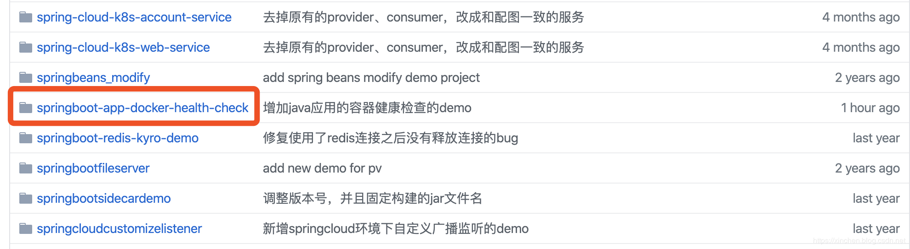

在《极速体验docker容器健康》一文已体验了docker容器健康检查功能，今天就来给java应用的容器加入健康检查，使应用的状态随时都可以被监控和查看。
Docker：19.03.2
上述abc.txt文件存在时，springboot应用的hello接口正常，若abc.txt不存在，springboot应用就不对外提供服务，相当于不健康状态（以此来模拟应用出现异常）；
如果您不想写代码，上述springboot应用的源码可在GitHub下载到，地址和链接信息如下表所示：
| 名称 | 链接 | 备注|
| :-------- | :----| :----|
| 项目主页| https://github.com/zq2599/blog_demos | 该项目在GitHub上的主页 |
| git仓库地址(https)| https://github.com/zq2599/blog_demos.git | 该项目源码的仓库地址，https协议 |
| git仓库地址(ssh)| git@github.com:zq2599/blog_demos.git | 该项目源码的仓库地址，ssh协议 |
这个git项目中有多个文件夹，本章的应用在springboot-app-docker-health-check文件夹下，如下图红框所示：

应用接入容器健康检查的步骤如下：
验证；
# Docker file from bolingcavalry # VERSION 0.0.1
# Author: bolingcavalry
#基础镜像
FROM openjdk:8-jdk-stretch
#作者
MAINTAINER BolingCavalry <zq2599@gmail.com>
#健康检查参数设置，每5秒检查一次，接口超时时间2秒，连续10次返回1就判定该容器不健康
HEALTHCHECK --interval=5s --timeout=2s --retries=10 \
CMD curl --silent --fail localhost:8080/getstate || exit 1由上述可见Dockerfile的内容非常简单，选定自身的基础镜像为openjdk:8-jdk-stretch，再配置好健康检查参数：
| 参数名 | 作用 |
|--|--|
| health-cmd | 指定命令在容器内执行，用于检查容器健康状态 |
| health-interval | 每次健康检查的间隔时间，默认30秒 |
| health-retries | 假设该值为3，表示若连续三次检测的返回结果都是不健康，就判定该容器不健康，默认值为3 |
| health-timeout | 超时时间，默认30秒 |
(base) zhaoqindeMacBook-Pro:springboot-app-docker-health-check zhaoqin$ docker build -t bolingcavalry/jdk8-healthcheck:0.0.1 .
Sending build context to Docker daemon 217.6kB
Step 1/3 : FROM openjdk:8-jdk-stretch
8-jdk-stretch: Pulling from library/openjdk
9a0b0ce99936: Already exists
db3b6004c61a: Already exists
f8f075920295: Already exists
6ef14aff1139: Already exists
962785d3b7f9: Already exists
631589572f9b: Already exists
c55a0c6f4c7b: Already exists
Digest: sha256:8bce852e5ccd41b17bf9704c0047f962f891bdde3e401678a52d14a628defa49
Status: Downloaded newer image for openjdk:8-jdk-stretch
---> 57c2c2d2643d
Step 2/3 : MAINTAINER BolingCavalry <zq2599@gmail.com>
---> Running in 270f78efa617
Removing intermediate container 270f78efa617
---> 01b5df83611d
Step 3/3 : HEALTHCHECK --interval=5s --timeout=2s --retries=10 CMD curl --silent --fail localhost:8080/getstate || exit 1
---> Running in 7cdd08b9ca22
Removing intermediate container 7cdd08b9ca22
---> 9dd7ffb22df4
Successfully built 9dd7ffb22df4
Successfully tagged bolingcavalry/jdk8-healthcheck:0.0.1docker push bolingcavalry/jdk8-healthcheck:0.0.1本次实战的目标是让Java应用支持docker的容器健康检查功能，接下来一起创建这个Java应用：
<?xml version="1.0" encoding="UTF-8"?>
<project xmlns="http://maven.apache.org/POM/4.0.0" xmlns:xsi="http://www.w3.org/2001/XMLSchema-instance"
xsi:schemaLocation="http://maven.apache.org/POM/4.0.0 https://maven.apache.org/xsd/maven-4.0.0.xsd">
<modelVersion>4.0.0</modelVersion>
<parent>
<groupId>org.springframework.boot</groupId>
<artifactId>spring-boot-starter-parent</artifactId>
<version>2.2.0.RELEASE</version>
<relativePath/> <!-- lookup parent from repository -->
</parent>
<groupId>com.bolingcavalry</groupId>
<artifactId>springboot-app-docker-health-check</artifactId>
<version>0.0.1-SNAPSHOT</version>
<name>springboot-app-docker-health-check</name>
<description>Demo project for Spring Boot</description>
<properties>
<java.version>1.8</java.version>
</properties>
<dependencies>
<dependency>
<groupId>org.springframework.boot</groupId>
<artifactId>spring-boot-starter-web</artifactId>
</dependency>
<dependency>
<groupId>org.projectlombok</groupId>
<artifactId>lombok</artifactId>
<optional>true</optional>
</dependency>
<dependency>
<groupId>commons-io</groupId>
<artifactId>commons-io</artifactId>
<version>2.5</version>
</dependency>
<dependency>
<groupId>org.springframework.boot</groupId>
<artifactId>spring-boot-starter-test</artifactId>
<scope>test</scope>
<exclusions>
<exclusion>
<groupId>org.junit.vintage</groupId>
<artifactId>junit-vintage-engine</artifactId>
</exclusion>
</exclusions>
</dependency>
</dependencies>
<build>
<plugins>
<plugin>
<groupId>org.springframework.boot</groupId>
<artifactId>spring-boot-maven-plugin</artifactId>
</plugin>
<!--使用jib插件-->
<plugin>
<groupId>com.google.cloud.tools</groupId>
<artifactId>jib-maven-plugin</artifactId>
<version>1.7.0</version>
<configuration>
<!--from节点用来设置镜像的基础镜像，相当于Docerkfile中的FROM关键字-->
<from>
<!--基础镜像是bolingcavalry/jdk8-healthcheck:0.0.1，该镜像已配置了健康检查参数-->
<image>bolingcavalry/jdk8-healthcheck:0.0.1</image>
</from>
<to>
<!--镜像名称和tag，使用了mvn内置变量${project.version}，表示当前工程的version-->
<image>bolingcavalry/${project.artifactId}:${project.version}</image>
</to>
<!--容器相关的属性-->
<container>
<!--jvm内存参数-->
<jvmFlags>
<jvmFlag>-Xms1g</jvmFlag>
<jvmFlag>-Xmx1g</jvmFlag>
</jvmFlags>
<!--要暴露的端口-->
<ports>
<port>8080</port>
</ports>
<!--使用该参数将镜像的创建时间与系统时间对其-->
<useCurrentTimestamp>true</useCurrentTimestamp>
</container>
</configuration>
</plugin>
</plugins>
</build>
</project>上述pom.xml有以下几处需要注意：
a. 使用jib插件来将当前工程构建成docker镜像；
b. 基础镜像是前面构建的bolingcavalry/jdk8-healthcheck:0.0.1，以此为基础镜像的镜像都带有健康检查功能；
package com.bolingcavalry.springbootappdockerhealthcheck;
import lombok.extern.slf4j.Slf4j;
import org.apache.commons.io.FileUtils;
import org.apache.commons.io.IOUtils;
import org.springframework.boot.SpringApplication;
import org.springframework.boot.autoconfigure.SpringBootApplication;
import org.springframework.http.ResponseEntity;
import org.springframework.util.StringUtils;
import org.springframework.web.bind.annotation.RequestMapping;
import org.springframework.web.bind.annotation.RequestMethod;
import org.springframework.web.bind.annotation.RestController;
import java.io.*;
import java.util.List;
@SpringBootApplication
@RestController
@Slf4j
public class SpringbootAppDockerHealthCheckApplication {
public static void main(String[] args) {
SpringApplication.run(SpringbootAppDockerHealthCheckApplication.class, args);
}
/**
* 读取本地文本文件的内容并返回
* @return
*/
private String getLocalFileContent() {
String content = null;
try{
InputStream is = new FileInputStream("/app/depend/abc.txt");
List<String> lines = IOUtils.readLines(is, "UTF-8");
if(null!=lines && lines.size()>0){
content = lines.get(0);
}
} catch (FileNotFoundException e) {
log.error("local file not found", e);
} catch (IOException e) {
log.error("io exception", e);
}
return content;
}
/**
* 对外提供的http服务，读取本地的txt文件将内容返回，
* 如果读取不到内容返回码为403
* @return
*/
@RequestMapping(value = "/hello", method = RequestMethod.GET)
public ResponseEntity<String> hello(){
String localFileContent = getLocalFileContent();
if(StringUtils.isEmpty(localFileContent)) {
log.error("hello service error");
return ResponseEntity.status(403).build();
} else {
log.info("hello service success");
return ResponseEntity.status(200).body(localFileContent);
}
}
/**
* 该http服务返回当前应用是否正常，
* 如果能从本地txt文件成功读取内容，当前应用就算正常，返回码为200，
* 如果无法从本地txt文件成功读取内容，当前应用就算异常，返回码为403
* @return
*/
@RequestMapping(value = "/getstate", method = RequestMethod.GET)
public ResponseEntity<String> getstate(){
String localFileContent = getLocalFileContent();
if(StringUtils.isEmpty(localFileContent)) {
log.error("service is unhealthy");
return ResponseEntity.status(403).build();
} else {
log.info("service is healthy");
return ResponseEntity.status(200).build();
}
}
}上述代码有以下几处需要注意：
a. hello方法是此应用对外提供的服务，如果本地文件abc.txt存在且内容不为空，hello方法的返回码就是200，否则返回码为403，表示当前服务出现异常；
b. getstate方法是新增的服务，该接口会被docke-daemon调用，如果返回码是200，就表示容器健康，如果返回码是403，表示容器不健康；
至此，支持容器健康检查的Java应用镜像构建成功，接下来验证容器的健康检查功能是否正常；
a. 让应用容器正常工作，确保文件/app/depend/abc.txt是正常的，此时容器状态应该是healthy
b. 将文件/app/depend/abc.txt删除，此时应用hello接口返回码为403，并且容器状态变为unhealthy
docker run --rm \
--name=java-health-check \
-p 8080:8080 \
-v /Users/zhaoqin/temp/201910/20:/app/depend \
bolingcavalry/springboot-app-docker-health-check:0.0.1-SNAPSHOT2019-10-20 14:16:34.875 INFO 1 --- [nio-8080-exec-1] o.a.c.c.C.[Tomcat].[localhost].[/] : Initializing Spring DispatcherServlet 'dispatcherServlet'
2019-10-20 14:16:34.876 INFO 1 --- [nio-8080-exec-1] o.s.web.servlet.DispatcherServlet : Initializing Servlet 'dispatcherServlet'
2019-10-20 14:16:34.892 INFO 1 --- [nio-8080-exec-1] o.s.web.servlet.DispatcherServlet : Completed initialization in 16 ms
2019-10-20 14:16:34.959 INFO 1 --- [nio-8080-exec-1] pringbootAppDockerHealthCheckApplication : service is healthy
2019-10-20 14:16:40.159 INFO 1 --- [nio-8080-exec-2] pringbootAppDockerHealthCheckApplication : service is healthy
2019-10-20 14:16:45.356 INFO 1 --- [nio-8080-exec-4] pringbootAppDockerHealthCheckApplication : service is healthy
2019-10-20 14:16:50.580 INFO 1 --- [nio-8080-exec-6] pringbootAppDockerHealthCheckApplication : service is healthy(base) zhaoqindeMBP:20 zhaoqin$ docker ps
CONTAINER ID IMAGE COMMAND CREATED STATUS PORTS NAMES
51572d2488fb bolingcavalry/springboot-app-docker-health-check:0.0.1-SNAPSHOT "java -Xms1g -Xmx1g …" About a minute ago Up About a minute (healthy) 0.0.0.0:8080->8080/tcp java-health-check019-10-20 14:22:37.490 ERROR 1 --- [nio-8080-exec-7] pringbootAppDockerHealthCheckApplication : service is unhealthy(base) zhaoqindeMBP:20 zhaoqin$ docker ps
CONTAINER ID IMAGE COMMAND CREATED STATUS PORTS NAMES
51572d2488fb bolingcavalry/springboot-app-docker-health-check:0.0.1-SNAPSHOT "java -Xms1g -Xmx1g …" 7 minutes ago Up 7 minutes (unhealthy) 0.0.0.0:8080->8080/tcp java-health-check至此，Java应用在docker环境配置容器健康检查的实战就完成了，希望您在给自己的应用添加健康检查时，此文能给您一些参考。